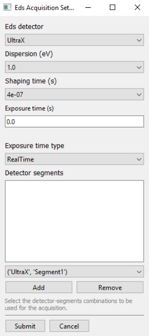

Opens a pop-up window with a form used to create a EdsAcquisitionSettings Object.
create_eds_acquisition_settings(microscope)| microscope | TemMicroscopeClient | a connected microscope client |
| EdsAcquisitionSettings | The created settings object. |
Any exceptions thrown during creation of the settings object are displayed on screen upon clicking submit. Upon successful submit (no exceptions thrown), returns a valid settings object. Upon clicking cancel, returns None.

create_stem_acquisition_settings()
create_stem_data_settings()
create_camera_acquisition_settings()
create_eds_spectrum_image_settings()